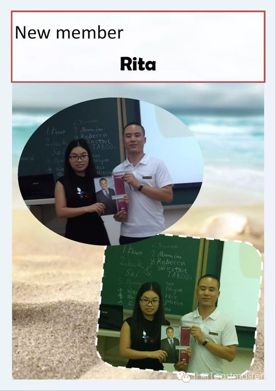
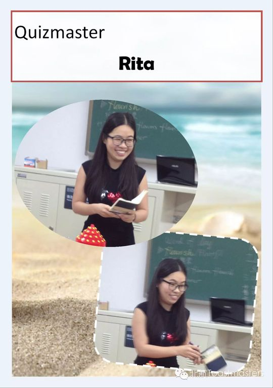
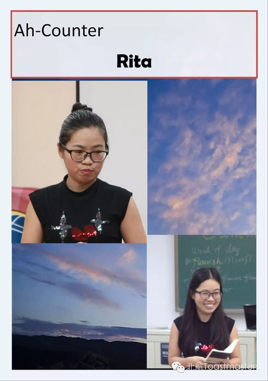
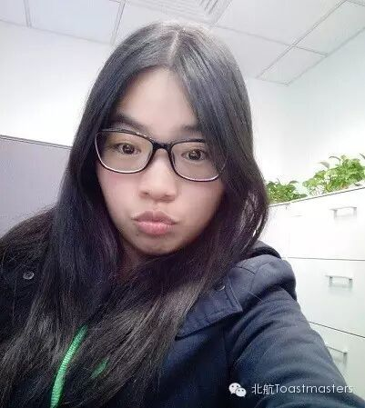
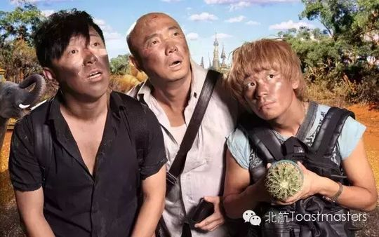

Rita
一位从英语专业走来、把减肥与梦想都讲成故事的可爱演讲者。
会员活跃 2015–2015出现 6 次 · 6 篇4 场演讲
Rita（Rita Kuang）是北航外国语学院的一名研究生。她与头马的缘分始于2013年——当时她随头马资深会员、同学Doris去了Athena Toastmasters俱乐部，被那里的氛围深深打动，很想加入，却因实习与学业繁忙、无暇再担起第三重身份而作罢。直到2015年5月实习结束，她偶然发现北航也有一个头马俱乐部，惊喜之下毫不犹豫地加入了同伴们的行列。她在2015年9月初的新会员介绍中写道，这里的伙伴们友善、专业、乐于助人，她在此收获的不只是英语的进步，更有沟通能力和友谊，并感叹"真希望能早几年加入北航头马"。
入会后,Rita进步神速。2015年8月7日与21日,她连续两次被安排做CC1自我介绍演讲,主持人形容她是"可爱而独特的女孩",尤其那个结束演讲时的招牌姿势让人印象深刻。随后她一路推进项目:在109次会议带来CC2《He has a dream》,把"梦想"这一属于他们这代人的热门话题讲得引人共鸣;到111次会议又以CC3《Healthy Diet》登场,作为"经验丰富的老师"，用一首打油诗道出大多数女生的减肥心声，告诉大家什么才是健康有效的减肥方式。
短短一两个月内,Rita还多次走上主持席:在110次会议担任当晚的Toastmaster主持,在106、107次"职业规划"主题会议中作为备稿演讲者亮相。她身上既有外语人的语言功底,又有那份"可爱、独特"的真性情,把每一次演讲都讲成贴近生活的小故事——减肥、梦想、自我,都成了她与听众之间真诚的连接。
里程碑
- 2013 初遇头马随同学、资深会员Doris到访Athena头马俱乐部，被氛围打动，萌生加入之心。
- 2015-05 加入北航Toastmasters ↗实习结束后偶然发现北航有头马俱乐部，毫不犹豫加入。
- 2015-08-07 首秀破冰 CC1 ↗在106次会议带来CC1自我介绍演讲。
- 2015-09-18 完成 CC3 ↗在111次会议以《Healthy Diet》完成CC3，展现自然亲切的演讲风格。
闯关之路 · Competent Communication
✓
CC1
破冰
✓
CC2
组织你的演讲
✓
CC3
明确目标
CC4
怎么说
CC5
肢体在说话
CC6
声音的变化
CC7
研究你的主题
CC8
善用视觉辅助
CC9
以理服人
CC10
激励听众
做过的演讲 · 4 场
破冰自我介绍演讲。主持人称她可爱而独特，结束时的招牌姿势令人印象深刻。
破冰自我介绍演讲，介绍自己、家庭与生活，展现独特个性。
以梦想为题，讲述梦想如何帮人改变现状、实现价值，唤起听众对自身梦想的共鸣。
以一首减肥打油诗开场，作为有经验的人讲解为何节食常失败，怎样才是健康有效的减肥。
担任过的会议角色
Toastmaster主持
为俱乐部做的事
- 短期内连续完成CC1至CC3备稿演讲，以减肥、梦想等贴近生活的题材活跃会议气氛
- 在110次会议担任Toastmaster主持，串联当晚流程
- 以外国语学院研究生的语言功底为俱乐部带来高质量英文演讲
- 在新会员介绍中真诚分享头马心得，传递俱乐部友善专业的形象
照片墙 · 时间线
共 20 帧，其中 16 帧已用人脸识别确认是本人（带 ✓）。
 ✓
✓ ✓
✓ ✓
✓ ✓
✓ ✓
✓
✓
✓ ✓
✓ ✓
✓
✓ ✓
✓ ✓
✓ ✓
✓ ✓
✓ ✓
✓ ✓
✓



完整足迹 · 6 次出现（点开，每条可跳转原文）
- 2015-08-07第106次 · 做CC1自我介绍演讲
- 2015-08-21第107次 · 做CC1自我介绍演讲
- 2015-09-04第109次 · 做CC2备稿演讲《He has a dream》
- 2015-09-09新会员自我介绍，2015年5月入会，外国语学院研究生
- 2015-09-11第110次 · 担任本次会议Toastmaster主持
- 2015-09-17第111次 · 做CC3备稿演讲《Healthy Diet》
“What I gained here is not just improvement of English but also communication skills and friendship.”